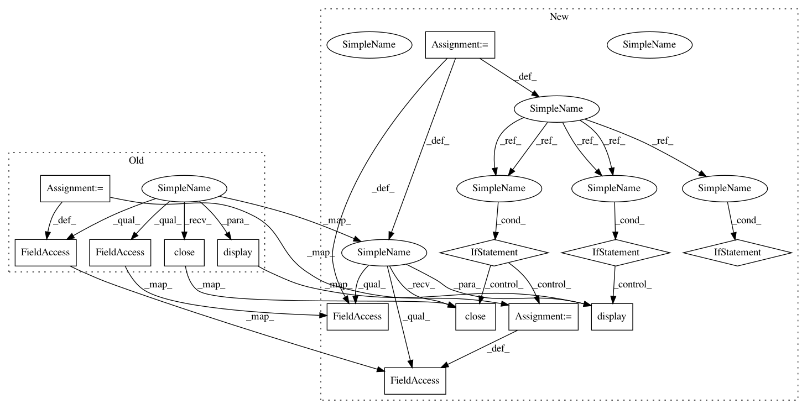

6cda6f735d04adb96866c64f18c28d57d79ee535,rankeval/analysis/statistical.py,,_multi_kfold_scoring,#Any#Any#Any#Any#,222
Before Change
score : numpy.ndarray
A matrix num_instances x L.
progress_bar = IntProgress(min=0, max=L, description="Computing L scores")
display(progress_bar)
scores = np.zeros( (dataset.n_instances, L), dtype=np.float32)
for l in range(L):
progress_bar.value += 1
scores[:,l] = _kfold_scoring(dataset, k, algo)
progress_bar.bar_style = "success"
progress_bar.close()
return scores
After Change
score : numpy.ndarray
A matrix num_instances x L.
if ipywidgets:
progress_bar = ipywidgets.IntProgress(
min=0, max=L, description="Computing L scores")
display(progress_bar)
scores = np.zeros( (dataset.n_instances, L), dtype=np.float32)
for l in range(L):
if ipywidgets:
progress_bar.value += 1
scores[:,l] = _kfold_scoring(dataset, k, algo)
if ipywidgets:
progress_bar.bar_style = "success"
progress_bar.close()
return scores
def bias_variance(datasets=[], algos=[], metrics=[], L=10, k=2):
In pattern: SUPERPATTERN
Frequency: 3
Non-data size: 14
Instances
Project Name: hpclab/rankeval
Commit Name: 6cda6f735d04adb96866c64f18c28d57d79ee535
Time: 2019-07-26
Author: trani.salvatore@gmail.com
File Name: rankeval/analysis/statistical.py
Class Name:
Method Name: _multi_kfold_scoring
Project Name: hpclab/rankeval
Commit Name: 6cda6f735d04adb96866c64f18c28d57d79ee535
Time: 2019-07-26
Author: trani.salvatore@gmail.com
File Name: rankeval/analysis/statistical.py
Class Name:
Method Name: bias_variance
Project Name: hpclab/rankeval
Commit Name: 6cda6f735d04adb96866c64f18c28d57d79ee535
Time: 2019-07-26
Author: trani.salvatore@gmail.com
File Name: rankeval/analysis/statistical.py
Class Name:
Method Name: statistical_significance